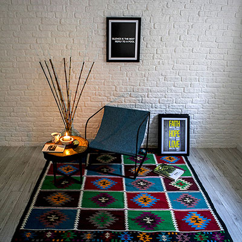

Стиль минимализм подразумевает использование простых геометрических форм и декларирует однотонность а также, минимальное количество деталей и элементов декора или полное их отсутствие. Но, несмотря на это, здесь имеется масса возможностей в поиске идеальных дизайнерских решений. Относительно цветовой палитры – преимущественно светлые оттенки, основанные на игре полутонов, обилие белого цвета, зачастую в контрасте с черным.
И все это дополняется такими материалами, как натуральное дерево, матовое стекло, хромирование, сталь, алюминиевые профили и кожа.
Что такое мебель в стиле минимализм? Это, прежде всего, многофункциональная мебель, среди которой присутствует лишь самая необходимая, в целях обеспечения максимума пространства и свободного места в помещении. И, конечно, нужно признать, что данный стиль идеален для людей самодостаточных творческих, особенно, одиночек, смысл жизни которых, как и их существование, целиком и полностью заключается исключительно в работе. А большому семейству с наличием маленьких детей минимализм совершенно не подходит. Еще минимализм обладает необычным релаксирующим свойством, он успокаивает и умиротворяет и абсолютно не надоедает, что, согласитесь, немало важно.
Мебель для гостиной
Во-первых, самые необходимые атрибуты – это диван и журнальный столик. В принципе, это все, что должно быть в идеале. Но, поскольку, мы не совсем еще готовы к такому раскладу, да и просто банально нужно же куда-то складывать вещи, которых обычно не мало, допускается наличие модульных стенок, снабженных скрытыми отсеками, нешироких нейтрального цвета. Открытой должна быть только одна полочка – под телевизор.
Имеется и другой вариант – функциональная мебель для гостиной с оборудованным рабочим местом с компьютером, которое также скрыто за дверцами. По такому принципу мебель может скрывать целое спальное место или, к примеру, откидную столешницу. Что касается диванов и кресел, здесь могут быть такие варианты: или идеально ровные геометрические формы, или полукруглые. Кстати, очень часто диван или кресла служат ярким акцентом всего интерьера, в связи с чем, их цвет может быть даже ярко-красным или зеленым.
Для изготовления журнального столика обычно используется стекло, металл или дерево – лишь бы он гармонировал с остальными предметами мебели и со всей обстановкой в целом.
Мебель для спальни
Относительно спальни можно сказать то же самое – главное – это простота и наличие строгой геометрии в формах. Мебель также должна быть лишена декоративных украшений. Обязательно должна быть оснащена скрытой системой для хранения вещей: встроенные шкафы-купе, подиумы с ящичками, просторные гардеробные. Спальное ложе, бесспорно, должно быть в центре внимания. Идеальный вариант – это кровать в виде татами или платформы с отсутствием изголовья и балдахина. Если расположить ее на подиуме, то под ней удобно хранить вещи. Прикроватные тумбочки должны быть невысокими, без декора. Открытая и навесная мебель в подобном интерьере неприемлема. Желательно наличие зеркала прямоугольной формы, без богатой рамы.
Мебель для кухни
Для кухни главное — наличие множества плоских фасадов в мебели. Очень приветствуется глянец, причем, высокого уровня. В идеале столешница должна быть изготовлена исключительно из камня. Форма кухонного стола — прямоугольная или круглая. Из материалов для кухонных гарнитуров в стиле минимализм допускаются следующие: дерево, металл, камень. Дополнительные аксессуары используются или в самом минимальном количестве, или же вовсе не используются. Все линии должны быть прямыми, а поверхности ровными.
Мебель для ванной
Ванная комната в стиле минимализм допускает контрасты, например, если обыграть серый и красный цвета. Ну и, конечно же, наличие свободного пространства. Поэтому мебели должно быть минимум, как и аксессуаров, и она должна быть функциональной. Также должны присутствовать большие плоскости, простота оформления, монохромность и четкость геометрических линий. Уместна будет подвесная мебель, способствующая расширению пространства, хотя, возможны и тумбы под раковиной.
Особенности стиля минимализм
Не следует забывать, что главным отличием и особенностью данного стиля является пустота пространства. В таком интерьере всего должно быть минимум, как цветового сочетания, декора и отделки, так и мебельного оснащения. Именно, исходя из этого, нужно оформлять то или иное помещение, а также, помнить об этом при покупке мебели. Ведь ваша главная задача заключается, прежде всего, в том, чтобы как можно больше расширить имеющееся пространство и впустить в него максимум естественного света.
минимализм в Алматы
remontbp.com